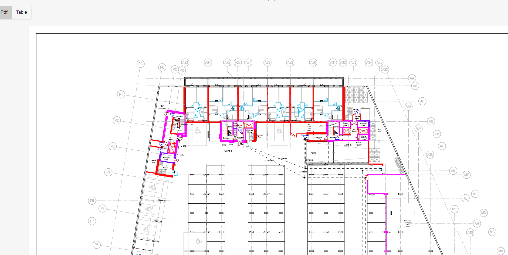

Upload pdf file by clicking on Upload button. First page of the pdf file is used.

Measure scale: When click on measure scale button, user will be able to draw a line on pdf page. After release the mouse, a modal will show for user to input the real life length of the line on pdf by meter, this will allow program to match real life distance with the pdf page distance. The value is saved when user click submit on the modal.
Add fire: When user click on Add fire, a fire will be added to the pdf. User can drag the fire to desired position. For now user can only add one fire.
Draw: When click on Draw, User will be able to draw the path by click onto the pdf. Each click will connect the previous point with the current point. Once finish the draw, user can click on draw again to turn off drawing path on pdf.
Input params: When click on input params button, a modal will be shown for user to input constant for calculation
Calculate: Once all condition are met, when click on calculate, the table on the Table tab will generate the data using formula, distance and params. When user moving the fire and press again, the data will be recalculate.
Export: The Export button will export all the table data into a csv file.
Clear: Clear all the input of the program so user can redo the measure, draw and calculate again.